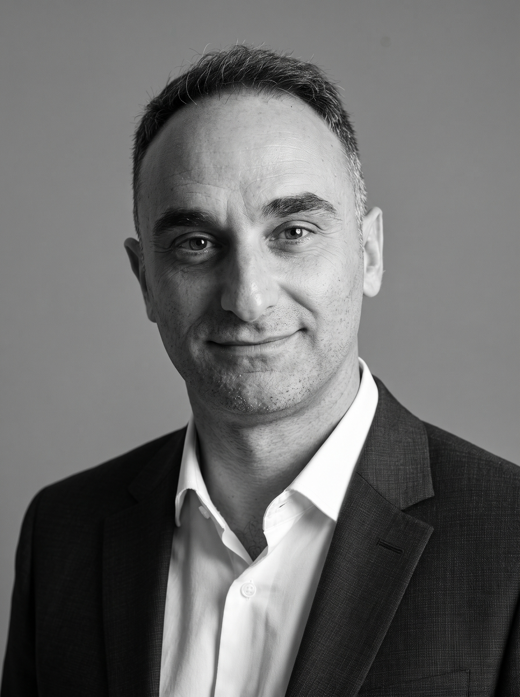

Valuation
Model the value of businesses, assets, or projects; test the assumptions that drive it and compare transaction or investment scenarios.
LEVNAR brings valuation, portfolio insight, and reporting into tailored AI applications built around each organization’s decisions.
Explore our approachWe connect financial and operational information, establish the definitions that govern it, and build models that reveal drivers, compare scenarios, and explain the consequences of a decision. Each engagement begins with a specific business question and a measurable outcome.
Reliable answers require reliable foundations. Calculations remain traceable; AI makes the findings accessible, comprehensible and useful to decision makers.
Map sources, reconcile key measures, and document the definitions management trusts.
Connect financial results to operations and test the assumptions that shape performance.
Use explainable AI to ask questions, examine trade-offs, and move from insight to action.
LEVNAR LLC is a Delaware-based company built by a team with complementary experience in corporate development, financial analysis, technology, and execution. We identify decisions where better intelligence has tangible value, then build around the needs of the people making them.
Selected LEVNAR projects are enhanced by a strategic partner that contributes a unique combination of global advisory experience and AI expertise. Their Digital & Data Analytics team brings together data science, predictive modeling, optimization, valuation, and risk insight. Working closely with LEVNAR’s AI Development team, this collaboration turns complex information into tailored decision tools and measurable outcomes.
The people shaping LEVNAR bring together financial, academic, strategic, and entrepreneurial experience.
Chief Executive Officer
Investment banker and strategic adviser. Former Managing Director at Mesirow. Earlier roles at Goldman Sachs and Citigroup.
Director of Research & Development
Professor of Finance at AUEB with a PhD in Finance. Researches investment decisions and optimization models.

Director of AI Application Development
Assistant Professor of Mathematical Economics at UoI. Works across FinTech RnD and AI agentic orchestrated applications.
Senior Advisor, Strategic Growth
Founder and strategic growth adviser with over 30 years of experience. Advises on M&A, corporate funding and cross-border expansion.
Start with one service or combine several in a platform tailored to your data and decisions. Scope and implementation are defined with each client.
Model the value of businesses, assets, or projects; test the assumptions that drive it and compare transaction or investment scenarios.
Identify exposures, stress-test key assumptions, and see how adverse scenarios affect value, cash flow, or performance.
Track holdings or projects in one view, compare actual results with targets, and flag changes that need attention.
Turn governed data and model outputs into consistent management reports with traceable figures and clear explanations.
Connect sources, reconcile measures, define KPIs, and control access so every selected capability works from trusted information.
Ask questions in natural language, explore scenarios, and trace answers back to the underlying data and calculations.
We are shaping our first applications around sectors where fragmented data and changing assumptions make decisions harder.
Profitability, capacity, utilization, pricing, and expansion scenarios.
Cost, capacity, sustainability, and investment scenarios for complex assets and data centers.
Comparable performance across units, systems, and operating models.
Planning and monitoring tools designed for accountable, controlled environments.
We connect analysis to decisions with tangible commercial and operational outcomes. The measure is value delivered, not the volume of output.
We apply AI where it improves how people examine evidence and evaluate options. Human judgment remains accountable for the decision.
Each application starts with the client’s systems, constraints, and decision. Its design follows the problem rather than a standard template.
We shorten the path from data to action and reduce avoidable manual work. Time and cost savings are assessed for each use case.
Definitions, calculations, and sources remain traceable and testable. Users can see the basis of an answer before relying on it.
Sensitive information is handled through controlled access and appropriate permissions. Data use and oversight are defined for each engagement.
LEVNAR develops applications for organizations that need clearer insight into their operations and choices.